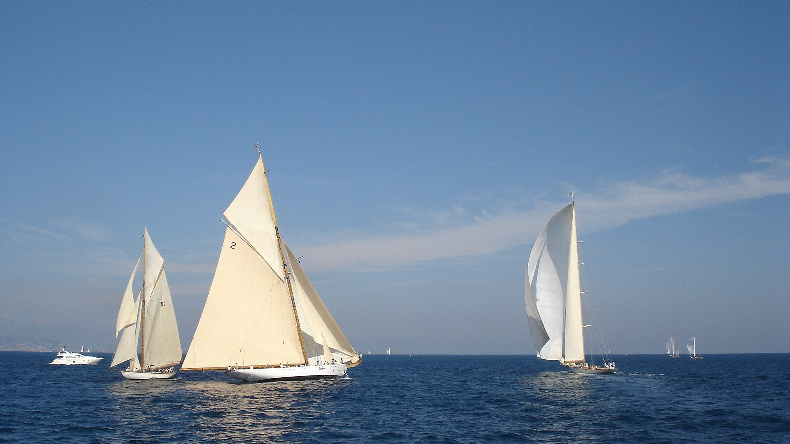

Wind, gusts, waves and sea temperature, hour by hour and for seven days. A clear call instead of raw numbers: is it good to sail today?
Loading the forecast…
Figures in km/h. The bar’s height shows wind speed and its colour the sailing call; the thin line marks gusts, the arrow the direction the wind blows towards.
Each day is judged by its strongest wind and highest waves: a calm morning with a rough afternoon does not count as “good”.
The sailor’s language for wind strength. Our call is made for 5–10 metre leisure boats, and it looks beyond the wind:
| Bf | Wind and sea | Speed | Call |
|---|---|---|---|
| 0 | CalmSea like a mirror | < 1 km/h | Good to sail |
| 1 | Light airRipples | 1–5 km/h | Good to sail |
| 2 | Light breezeSmall wavelets | 6–11 km/h | Good to sail |
| 3 | Gentle breezeScattered whitecaps begin | 12–19 km/h | Good to sail |
| 4 | Moderate breezeFrequent whitecaps | 20–28 km/h | Take care |
| 5 | Fresh breezeModerate waves, some spray | 29–38 km/h | Experienced crews only |
| 6 | Strong breezeLarge waves, foam everywhere | 39–49 km/h | Not recommended |
| 7 | Near galeSea heaps up, streaks of foam | 50–61 km/h | Not recommended |
| 8 | GaleHigh waves, blown foam | 62–74 km/h | Dangerous |
| 9 | Strong galePoor visibility, crests topple | 75–88 km/h | Dangerous |
This page is for planning. Everything you need once you are on board is in our iPhone and iPad app: logbook, checklists, boat records and the emergency screen.
Forecasts come from Open-Meteo (CC BY 4.0); the call is for information only. It does not replace official maritime warnings or the skipper’s judgement. If you use your location, the coordinates are sent to Open-Meteo for the forecast only and are never stored.